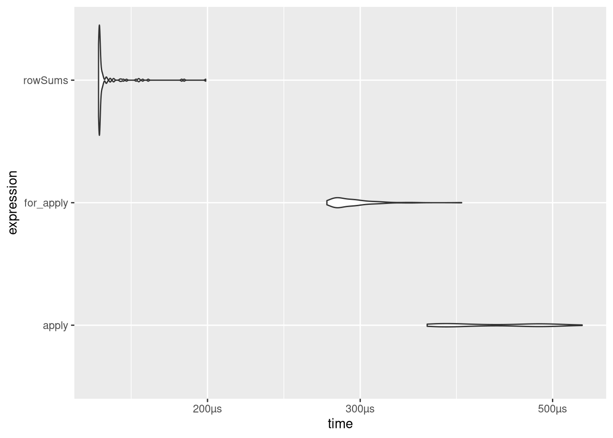

Simulations- und Programmierübungen in R
Im Folgenden werden keine neuen Konzepte eingeführt, zum Üben der bisher eingeführten Konzepte werden aber eine Reihe von Aufgaben gestellt, die Schritt für Schritt mit statistischen Beispielen zu ersten eigenen und zunehmend komplexen Simulationen führen sollen. Zu jeder Aufgabe wird auch eine Musterlösung angeboten, wie immer ist diese aber zum Einen nicht die einzig mögliche Lösung und zum Anderen bitte erst zu konsultieren, wenn eine eigene Lösung versucht wurde. Der Lernfortschritt durch eigenes Programmieren (und Fehler machen) ist wesentlich größer als durch das einfache Lesen fertiger Skripte.
Pascalsches Dreieck
Das Ziel soll sein, eine Funktion namens binom_mat zu erstellen, die für eine gegebene Zahl n das Pascalsche Dreieck bis zur gegebenen Größe zurückgibt.
Dieses Dreieck soll erstmal als Matrix zurückgegeben werden, die für die Zahl 5 zum Beispiel so aussehen könnte:
## [,1] [,2] [,3] [,4] [,5]
## [1,] 1 0 0 0 0
## [2,] 1 1 0 0 0
## [3,] 1 2 1 0 0
## [4,] 1 3 3 1 0
## [5,] 1 4 6 4 1Die erste Spalte der Matrix soll also die “obere linke Flanke” des Dreiecks repräsentieren.
Antwort
binom_mat <- function(z){ # (1)
mat <- matrix(0,z,z) # (2)
for(i in seq(z)){ # (3)
mat[i,1] <- 1
}
for(i in seq(2,z)){ # (4)
for(j in seq(2,i)){ # (5)
mat[i,j] <- mat[i-1,j-1] + mat[i-1,j] # (6)
}
}
return(mat) # (7)
}Erläuterungen:
Die Matrix soll am Ende z Zeilen haben. Allerdings werden die Zeilen und Spalten einer Matrix beginnend mit 1 durchnummeriert, so dass die Zeilennummer nicht das n der Binomialkoeffizienten ist. Vielmehr stehen die Bionomialkoeffizienten \(n \choose k\) am Ende in der Zeile mit der Nummer n+1 und der Spalte mit der Nummer k+1.
Hier wird eine Matrix erzeugt, die den Namen mat bekommt. Die Matrix wird zunächst mit Nullen gefüllt. Sie soll z Zeilen und z Spalten haben.
Die linke Spalte der Matrix wird mit Einsen gefüllt. Hier ist zu bemerken, dass die Elemente einer Matrix mit Zeilen- und Spaltennummer in eckigen Klammern angesprochen werden.
Hier folgen verschachtelte Schleifen. In der äußeren Schleife werden die Zeilen der Matrix angesprochen, die der Reihe nach mit den richtigen Zahlen gefüllt werden sollen. Die erste Zeile der Matrix hat schon die Endgestalt, daher beginnt die Schleife mit i=2.
Hier kommt die innere Schleife; die Zeile mit der Nummer i ist erreicht, die vorherigen Zeilen sind schon richtig aufgefüllt worden. Die Elemente in dieser Zeile ergeben sich dadurch, dass man die Zahlen links darüber und direkt darüber addiert. Die erste Zahl 1 der Zeile wurde vorher schon eingefüllt, daher fängt die Schleife mit j=2 an; außerdem sind die Zahlen am Ende alle 0 (sofern sie außerhalb des Dreiecks liegen), daher geht die Schleife nur bis j=i (i ist an dieser Stelle eine feste Zahl).
Hier werden – wie gerade beschrieben – die Zahlen der i-ten Zeile eingefügt.
Die Matrix ist jetzt fertig ausgefüllt und wird an dieser Stelle zurückgegeben.
Für manche Anwendungen wollen wir vielleicht eine Liste, keine Matrix als Output haben.
Schreibe deswegen eine Funktion binom_list, die eine Liste von Vektoren zurückgibt.
Verpacke dann beide Funktionen in eine binom_pascal-Funktion, in der mit einem optionalen Argument das Output-Format für das Pascalsche Dreieck angibt.
Antwort
binom_list <- function(z) {
out <- list()
for (i in seq_len(z)) {
out[[i]] <- 1
for (j in seq_len(i - 1) + 1) {
out[[i]][j] <-
out[[i - 1]][j - 1] + ifelse(is.na(out[[i - 1]][j]),
0,
out[[i - 1]][j])
}
}
return(out)
}
binom_list(5)## [[1]]
## [1] 1
##
## [[2]]
## [1] 1 1
##
## [[3]]
## [1] 1 2 1
##
## [[4]]
## [1] 1 3 3 1
##
## [[5]]
## [1] 1 4 6 4 1binom_pascal <- function(z, format = 'm'){
if(format != 'm'){
return(binom_list(z))
}
return(binom_mat(z))
}Erweitere deine Listenfunktion so, dass die zurückgegebene Liste die Klasse pascal hat und die Anzahl der Zeilen des Dreiecks im n-Attribut abgelegt wird.
Schreibe nun eine Erweiterung des print-Befehls, indem du eine Funktion print.pascal definierst, die die Argumente x und den ...-Operator erwartet.
Mit diesem Namen legst Du fest, dass die pascal-Klasse mit genau dieser Funktion geprintet werden soll, sobald also ein Objekt diese Klasse hat, wird diese Printfunktion aufgerufen.
Der Output soll dabei so aussehen:
## 1
## 1 1
## 1 2 1
## 1 3 3 1
## 1 4 6 4 1Antwort
binom_list <- function(z) {
out <- list()
for (i in seq_len(z)) {
out[[i]] <- 1
for (j in seq_len(i - 1) + 1) {
out[[i]][j] <-
out[[i - 1]][j - 1] + ifelse(is.na(out[[i - 1]][j]),
0,
out[[i - 1]][j])
}
}
attributes(out)$class <- 'pascal'
attributes(out)$n <- z
return(out)
}
## für einfache Zahlen können wir die print-Funktion so schreiben:
print.pascal <- function(x,...){
n <- attributes(x)[['n']]
for(i in seq_len(n)){
cat(rep(' ', n-i), sep = '')
cat(x[[i]])
cat('\n')
}
}
## funktioniert:
binom_list(5)## 1
## 1 1
## 1 2 1
## 1 3 3 1
## 1 4 6 4 1## geht bei mehr digits aber kaputt:
binom_list(7)## 1
## 1 1
## 1 2 1
## 1 3 3 1
## 1 4 6 4 1
## 1 5 10 10 5 1
## 1 6 15 20 15 6 1## mit einer Verallgemeinerung der eingefügten Leerzeichen klappt das aber auch:
print.pascal <- function(x,...){
n <- attr(x, 'n')
nsp <- nchar(as.character(max(x[[n]]))) # guck wie viele Stellen die längste Zahl hat
for(i in seq_len(n)){
dummy <- str_pad(as.character(x[[i]]), # ergänze die Zahl als character auf die größte Länge
side = 'left',
width = nsp)
cat(rep(' ', nsp * (n-i)), sep = '')
cat(dummy, sep = paste0(rep(' ', nsp), collapse = ''))
cat('\n')
}
}
binom_list(10)## 1
## 1 1
## 1 2 1
## 1 3 3 1
## 1 4 6 4 1
## 1 5 10 10 5 1
## 1 6 15 20 15 6 1
## 1 7 21 35 35 21 7 1
## 1 8 28 56 70 56 28 8 1
## 1 9 36 84 126 126 84 36 9 1Als letztes wollen wir die Funktion nur noch praktisch nutzen.
Dafür müssen wir noch eine Funktion binom_coeff schreiben, die für gegebenes n und k den Wert des Binominialkoeffizienten ausgibt.
Überlege Dir dazu, ob Du lieber binom_mat oder binom_list benutzen möchtest.
Mit choose(n,k) kannst Du überprüfen, ob die in R angelegte Funktion für den Binomialkoeffizienten auf dieselbe Lösung kommt.
Antwort
binom_coeff <- function(n,k){
if(n==0){ # (1)
if(k==0){return(1)} else{return(0)}
}
mat <- binom_pascal(n+1) # (2)
return(mat[n+1,k+1]) # (3)
}
binom_coeff(10,2)## [1] 45choose(10,2)## [1] 45Anmerkungen:
n = 0 muss abgefangen werden.
Wenn n nicht 0 ist, wird die Matrix erzeugt, die ausreichend groß ist, also n+1 Zeilen hat.
Der gesuchte Koeffizient steht dann in der Zeile n+1 und der Spalte k+1, da ja die Nummerierung der Zeilen und Spalten einer Matrix mit 1 beginnt und nicht mit 0.
Aus Spaß können wir auch mal die beiden Implementationen vergleichen.
Dazu bauen wir eine fast identische Funktion, die mit den Listen arbeitet und geben beide in bench::mark:
binom_coeff_l <- function(n,k){
if(n==0){
if(k==0){return(1)} else{return(0)}
}
mat <- binom_pascal(n+1, 'l')
return(mat[[n+1]][k+1])
}
library(bench)
n <- 30
k <- 5
bench::mark(iterations = 100,
list = binom_coeff_l(n,k),
mat = binom_coeff(n,k)) %>%
autoplot(type = 'violin')
Die Matritzen-Variante ist wesentlich schneller, probieren wir noch einmal wie sich das für verschieden große Matritzen verhält:
sim <- bench::press(
n = 100 * 1:5,
bench::mark(iterations = 100,
list = binom_coeff_l(n,k),
mat = binom_coeff(n,k))
)
pmap_dfr(list(sim$time,
names(sim$expression),
sim$n),
~tibble(times = as.numeric(..1),
iterator = ..2,
reps = 100 * ..3)) %>%
ggplot(aes(x = reps,
y = times,
color = iterator)) +
geom_point(alpha = .1) +
stat_summary(geom='line',
fun = median) +
labs(y = 'Zeit [s]',
x = 'Iterierte Werte') +
scale_color_brewer(palette = 'Dark2') +
geom_smooth(method = 'lm',
formula = y ~ poly(x, 2)) +
theme_minimal()
ggsave('imgs/list_mat_pascal.png',
scale = 2)
Matrizen und \(\chi^2\)
Beispiele für Matrizen sind Kontingenztafeln. Hier spielen die Randsummen eine wichtige Rolle, die apply-Funktion bietet die oben schon erwähnte Möglichkeit, solche Randsummen besonders einfach zu bilden:
m <- matrix(c(1,2,3,4), ncol = 2)
m## [,1] [,2]
## [1,] 1 3
## [2,] 2 4apply(m, MARGIN = 1, FUN = sum)## [1] 4 6Die Argumente FUN und MARGIN müssen hier angegeben werden. Im Beispiel sollen Summen gebildet werden (FUN = sum), wobei ein Index festgehalten wird, hier Zeilenindex (MARGIN = 1). Der andere Index (hier dann der Spaltenindex) ist der Index, über den summiert wird. Sind die Einträge der Matix \(x_{ij}\), so werden also die Summen \(\sum_j x_{ij}\) gebildet, die Randsummen am rechten Rand.
Dasselbe mit MARGIN = 2 liefert die Summen der Einträge in den jeweiligen Spalten, also die Randsummen am unteren Rand, ausprobieren!
An der Stelle von sum können auch andere Funktionen eingesetzt werden, beispielsweise prod, wenn nicht Summen, sondern Produkte gebildet werden sollen (ausprobieren!).
Alternativ sind in R mit colSums und rowSums Funktionen zur Bildung von Spalten- und Zeilensummen schon implementiert, außerdem könnten wir auch eine for-Schleife nutzen, um die Summen zu berechnen.
Überlege zuerst, wie man Eine Funktion schreiben könnte, die mit denselben Argumenten wie apply mit Hilfe einer for-Schleife Zeilen- oder Spaltenweise Werte aggregiert.
Antwort
my_apply <- function(m,MARGIN,FUN, ...){
if(MARGIN == 2){
m <- t(m)
}
out <- numeric(nrow(m))
for (i in seq_len(nrow(m))) {
out[i] <- FUN(m[i,], ...)
}
return(out)
}
my_apply(m, 2, sum)## [1] 3 7apply(m, 2, sum)## [1] 3 7Nutze jetzt deine for-apply-Alternative, apply und rowSums um mit bench::mark zu testen, welche dieser Funktionen am besten in 100 Tests auf Basis einer 100x100-Matrix performed.
Antwort
library(bench)
m <- matrix(1:10000, ncol = 100)
bmark <- mark(
iterations = 100,
for_apply = my_apply(m, 1, sum),
apply = apply(m, 1, sum),
rowSums = rowSums(m)
)
bmark %>%
autoplot(type = 'violin')
Eine dieser Funktionen können wir nun benutzen, um den chi-Quadrat-Wert einer Kontingenztafel zu bestimmen.
Schreibe dazu eine Funktion, die für eine Matrix x einen chi-Quadrat-Wert nach der Formel \[\chi^2=\sum_{i,j}\frac{(f_{o,ij}-f_{e,ij})^2}{f_{e,ij}} = \sum_{i,j}\frac{\left(n_{ij}- \frac{n_{i\cdot} n_{\cdot j}}{n}\right)^2}{\frac{n_{i\cdot} n_{\cdot j}}{n}}\] berechnet.
Für diese Funktion gibt es zwei Möglichkeiten zur Implementation. Zum Einen können geschachtelte for-Schleifen verwendet werden, zur anderen kann die sweep-Funktion benutzt werden.
sweep() kann benutzt werden um eine Matrix zeilen-oder spaltenweise mit einem Vektor zu transformieren. Dabei kann ein arithmetsicher Operator (+,-,…) genutzt werden um die Werte zu verrechnen. Hier ist ein einfaches Beispiel in dem mit sweep das kleine 1-mal-1 in einer 10x10-Matrix erstellt wird:
m <- matrix(rep(1:10,each = 10), ncol = 10)
m## [,1] [,2] [,3] [,4] [,5] [,6] [,7] [,8] [,9] [,10]
## [1,] 1 2 3 4 5 6 7 8 9 10
## [2,] 1 2 3 4 5 6 7 8 9 10
## [3,] 1 2 3 4 5 6 7 8 9 10
## [4,] 1 2 3 4 5 6 7 8 9 10
## [5,] 1 2 3 4 5 6 7 8 9 10
## [6,] 1 2 3 4 5 6 7 8 9 10
## [7,] 1 2 3 4 5 6 7 8 9 10
## [8,] 1 2 3 4 5 6 7 8 9 10
## [9,] 1 2 3 4 5 6 7 8 9 10
## [10,] 1 2 3 4 5 6 7 8 9 10sweep(m, # Matrix
MARGIN = 1, # zeilenweise, also pro Zeile ein anderer Wert des Vektors
STATS = 1:10, # der Vektor mit dem multipliziert werden soll
FUN = '*') # Angabe dass multipliziert werden soll## [,1] [,2] [,3] [,4] [,5] [,6] [,7] [,8] [,9] [,10]
## [1,] 1 2 3 4 5 6 7 8 9 10
## [2,] 2 4 6 8 10 12 14 16 18 20
## [3,] 3 6 9 12 15 18 21 24 27 30
## [4,] 4 8 12 16 20 24 28 32 36 40
## [5,] 5 10 15 20 25 30 35 40 45 50
## [6,] 6 12 18 24 30 36 42 48 54 60
## [7,] 7 14 21 28 35 42 49 56 63 70
## [8,] 8 16 24 32 40 48 56 64 72 80
## [9,] 9 18 27 36 45 54 63 72 81 90
## [10,] 10 20 30 40 50 60 70 80 90 100Suche Dir einen der beiden Wege aus und setze diesen um.
Mit der chisq.test-Funktion könnt Ihr überprüfen, ob die bestehende Implementation auf dieselbe Lösung kommt.
Antwort
for_chisq <- function(m){ # (1)
I <- dim(m)[1] # (2)
J <- dim(m)[2]
n <- sum(m) # (3)
e <- matrix(rep(0,I*J),nrow = I) # (4)
nip <- rowSums(m) # (5)
npj <- colSums(m)
for(i in seq(I)){ # (6)
for(j in seq(J)){
e[i,j] <- nip[i] * npj[j]/n
}
}
e1 <- matrix(rep(0,I*J),nrow = I) # (7)
for(i in seq(I)){
for(j in seq(J)){
e1[i,j] <- (m[i,j]-e[i,j])^2/e[i,j] # (8)
}
}
return(sum(e1)) # (9)
}Anmerkungen:
Die Matrix x ist die zu untersuchende Kontingenztafel mit absoluten Häufigkeiten. Zur Berechnung wird die Formel Folie 165 QM1 benutzt.
Die Zeilenzahl I der Matrix wird bestimmt (zur Erinnerung: R unterscheidet zwischen Groß- und Kleinbuchstaben), nächste Zeile: Spaltenzahl J.
Die Gesamtzahl n aller Beobachtungen.
In der Matrix e sollen nachher die erwarteten Häufigkeiten stehen, hier wird die Matrix angelegt und mit Nullen gefüllt.
Vektor der rechten Randsummen (\(n_{i.}\)), nächste Zeile untere Randsummen (\(n_{.j}\)).
Die Matrix e wird mit den erwarteten Häufigkeiten gefüllt.
In der Matrix e1 sollen nachher die Summanden für den chi-Quadrat-Koeffizienten stehen, hier wird sie mit Nullen gefüllt angelegt.
Die Matrix e1 wird mit den Summanden gefüllt.
Der chi-Quadrat-Koeffizient ist jetzt die Summe der Zahlen in der Matrix e1.
mat_chisq <- function(m) {
e <- matrix(rep(colSums(m),
each = nrow(m)),
nrow = nrow(m))
e <- sweep(e,
rowSums(m),
MARGIN = 1,
FUN = '*')
e <- e / sum(m)
return(sum((m - e) ^ 2 / e))
}| Zeile | Was passiert? |
|---|---|
| 1 | |
| 2 | Matrix wird aufgefüllt mit Spaltensummen (wir erinnern uns dass Matrizen in R spaltenweise aufgefüllt werden) |
| 3 | und zwar wird jede Spaltensumme pro Spalte in jede Zeile geschrieben |
| 4 | und die Matrix soll dieselben Maße wie m haben. |
| 5 | |
| 6 | Wir nehmen die Matrix der Spaltensummen |
| 7 | und die Zeilensummen |
| 8 | gehen zeilenweise vor (jede Zeile eine Zeilensumme) |
| 9 | und multiplizieren die ni. und n.j in jeder Zelle. |
| 10 | Dann müssen wir die Zellen nur noch durch die Gesamtzahl der Beobachtungen teilen und haben die eij. |
| 11 | Als letztes quadrieren wir die Abweichungen der Matirx von den eij, teilen die Ergebnisse durch die eij und summieren alles auf. |
| 12 |
Kleine Zusatzaufgabe falls Interesse besteht: Benchmarke die zwei Implementationen (gerne die aus der Musterlösung, Du musst nicht noch selber die andere umsetzen7) und die folgende Variante gegeneinander:
unname(chisq.test(m)$statistic)Was kommt raus? Hast Du eine Idee, warum das Ergebnis so aussieht wie es aussieht?
Antwort
m <- matrix(1:10000, ncol = 100)
bmark <- bench::mark(
iterations = 1000,
forX2 = for_chisq(m),
matX2 = mat_chisq(m),
RX2 = unname(chisq.test(m)$statistic)
)
bmark %>%
autoplot(type = 'violin')Als letztes baue einen chi-Quadrat-Test auf Unabhängigkeit mit der \(\chi^2\)-Statistik aus unseren Funktionen durchführt und die Originalmatrix mit Randsummen, die Gesamtzahl an Beobachtungen, die Teststatistik, die Freiheitsgrade und das p8 zurückgibt.
Antwort
my_chisq.test <- function(m){
out <- list(statistic = mat_chisq(m))
mat <- rbind(m, colSums(m))
mat <- cbind(mat, rowSums(mat))
out$mat <- mat
out$n <- mat[nrow(mat), ncol(mat)]
out$df <- (nrow(m)-1) * (ncol(m) - 1)
out$p <- pchisq(out$statistic,
df = out$df,
lower.tail = F)
return(out)
}
m <- matrix(1:9,ncol = 3)
my_chisq.test(m)## $statistic
## [1] 0.46875
##
## $mat
## [,1] [,2] [,3] [,4]
## [1,] 1 4 7 12
## [2,] 2 5 8 15
## [3,] 3 6 9 18
## [4,] 6 15 24 45
##
## $n
## [1] 45
##
## $df
## [1] 4
##
## $p
## [1] 0.976471chisq.test(m)## Warning in chisq.test(m): Chi-squared approximation may be incorrect##
## Pearson's Chi-squared test
##
## data: m
## X-squared = 0.46875, df = 4, p-value = 0.9765Als kleinen Zusatz könnt Ihr Euch noch überlegen, wie Ihr eine eigene print-Funktion für Euren Test schreiben könntet.
Antwort
my_chisq.test <- function(m){
out <- list(statistic = mat_chisq(m))
mat <- rbind(m, colSums(m))
mat <- cbind(mat, rowSums(mat))
out$mat <- mat
out$n <- mat[nrow(mat), ncol(mat)]
out$df <- (nrow(m)-1) * (ncol(m) - 1)
out$p <- pchisq(out$statistic,
df = out$df,
lower.tail = F)
attributes(out)$class <- 'my_chisqtest'
return(out)
}
print.my_chisqtest <- function(x, ...){
cat('Chi-Quadrat-Test auf Unabhängigkeit')
cat('\n')
cat('Chi^2_(',x$df,') = ',x$statistic,'; p = ',x$p, sep = '')
cat('\n\n')
cat('Der Test ist damit auf 5%-Niveau',
ifelse(x$p<.05,' ',' nicht '),
'signifikant!', sep = '')
}
m <- matrix(1:9,ncol = 3)
my_chisq.test(m)## Chi-Quadrat-Test auf Unabhängigkeit
## Chi^2_(4) = 0.46875; p = 0.976471
##
## Der Test ist damit auf 5%-Niveau nicht signifikant!chisq.test(m)## Warning in chisq.test(m): Chi-squared approximation may be incorrect##
## Pearson's Chi-squared test
##
## data: m
## X-squared = 0.46875, df = 4, p-value = 0.9765t-Test
Erstelle eine Funktion my_dkw, die für einen gegebenen Vektor x deskriptive Kennwerte als Liste zurückgibt.
Diese Liste soll die Stichprobengröße9, den Mittelwert und die Varianz beinhalten.
Mit einem optionalen Argument corrected soll angegeben werden können, ob die korrigierte oder die unkorrigierte Stichprobenvarianz ausgegeben werden soll.
Antwort
my_dkw <- function(x,corrected=FALSE){
n <- length(x)
m <- sum(x)/n
sqa <- sum((x-m)^2)
var <- sqa/ifelse(corrected, n-1, n)
return(list(n = n,m = m, v = var))
}Mit Hilfe der vorangehenden Funktion soll nun ein rechtsseitiger Zwei-Stichproben-t-Test für unabhängige Stichproben bei vorausgesetzter Varianzhomogenität geschrieben werden.
Zur Erinnerung hier die Formel:
\[t={\frac {{M_2}-{M_1}}{\sqrt{\frac{\vphantom{(s_1^2}n_1+n_2}{n_1n_2}}\sqrt{{\frac {(n_1-1)s_{1}^{2}+(n_2-1)s_{2}^{2}}{\vphantom{n^2}n_1+n_2-2}}}}}\]
Als Argumente werden die Vektoren der beiden Stichproben eingegeben, die zu testende Vermutung soll sein, dass der zur ersten Stichprobe gehörende Erwartungswert größer ist als der zur zweiten Stichprobe gehörende.
Antwort
Hier eine mögliche Realisierung:
my_t_test0 <- function(x1,x2){ # (1)
dkw1 <- my_dkw(x1) # (2)
dkw2 <- my_dkw(x2)
n1 <- dkw1$n # (3)
n2 <- dkw2$n
S1q <- dkw1$v # (4)
S2q <- dkw2$v
sq <- (n1 * S1q + n2 * S2q)/(n1+n2-2) # (5)
vf <- (n1+n2)/(n1*n2) # (6)
nenner <- sqrt(vf*sq) # (7)
t <- (dkw1$m-dkw2$m)/nenner # (8)
df <- n1+n2-2 # (9)
return(1-pt(t,df)) # (10)
}Anmerkungen:
Als Argumente werden die beiden Stichprobenvektoren eingegeben. Der Test ist in dieser Form nicht richtig befriedigend, daher die 0 am Namen. Ihre Aufgabe ist es später, die Funktion so zu modifizieren (dann mit einem anderen Namen), dass sie Ihren Wünschen entspricht. In der Funktion werden die einzelnen Bestandteile des t-Bruchs ermittelt und am Ende zusammengebaut.
Die Kennwerte der ersten Stichprobe werden ermittelt, in der nächsten Zeile die der zweiten.
Die Länge der ersten Stichprobe wird extrahiert, da diese Länge häufiger vorkommt, ist ein kürzerer Name praktisch. Natürlich hätte man diese Zeile auch weglassen können; dann hätte man n1 im Folgenden überall durch dkw1$n ersetzten müssen. Entsprechend in der nächsten Zeile für die zweite Stichprobe.
Die Varianz der ersten Stichprobe wird extrahiert; sie bekommt den kürzeren Namen S1q (q für Quadrat), ausnahmsweise ist der erste Buchstabe groß, um daran zu erinnern, dass es die “normale” Varianz \(S_1^2\) und nicht die korrigierte Stichprobenvarianz \(s_1^2\) ist. Entsprechend die nächste Zeile für die zweite Stichprobe.
Hier wird \(s^2\) ausgerechnet. Die Rechnung entspricht nicht der Standardformel, das Ergebnis ist aber dasselbe wegen \(nS^2=(n-1)s^2\). Der Vorteil des Rechnens mit \(S^2\) ist der, dass hier auch eine Stichprobe einen Umfang von 1 haben kann, erst wenn beide Stichproben Umfang 1 haben, entsteht ein Problem. Ein Teil der Verbesserung könnte sein, dieses Problem abzufangen und durch eine print-Ausgabe darauf hinzuweisen.
Der Vorfaktor im Nenner.
Der Nenner.
Der t-Bruch.
Die Freiheitsgrade
Ergebnis ist der p-Wert des rechtsseitigen Tests.
Aufgaben:
- Stellen Sie sich vor, die Funktion würde nicht das richtige Ergebnis liefern. Fügen Sie Anweisungen ein, mit denen Sie die Zwischenresultate kontrollieren können um so einen möglichen Fehler zu finden!
Antwort
my_t_test0 <- function(x1,x2){
dkw1 <- my_dkw(x1)
dkw2 <- my_dkw(x2)
n1 <- dkw1$n
n2 <- dkw2$n
S1q <- dkw1$v
S2q <- dkw2$v
sq <- (n1 * S1q + n2 * S2q)/(n1+n2-2)
print(sq)
vf <- (n1+n2)/(n1*n2)
print(vf)
nenner <- sqrt(vf*sq)
print(nenner)
t <- (dkw1$m-dkw2$m)/nenner
print(t)
df <- n1+n2-2
return(1-pt(t,df))
}- Kontrollieren Sie das Ergebnis des t-Tests auf Folie 73 der Einführung! Die Daten dazu sind nicht explizit gegeben, lassen sich aber aus den Histogrammen auf Folie 46 (bis auf die unwesentliche Reihenfolge) leicht rekonstruieren (beachte: es handelt sich jeweils um 20 Werte). Bei der Herstellung der Datenvektoren kann der Ausdruck
rep(bin_value, times = n_per_bin)nützlich sein, mitmy_dkwkönnen Sie die Kennwerte der Stichproben überprüfen. Achtung: die Konvention bei der Differenz der Mittelwerte ist auf den Folien anders als hier!
Antwort
x <- rep(0:4, c(.05,.2,.5,.15,.1) * 20)
y <- rep(0:5, c(.1,.05,.25,.2,.3,.1) * 20)
my_dkw(x)## $n
## [1] 20
##
## $m
## [1] 2.05
##
## $v
## [1] 0.9475my_dkw(y)## $n
## [1] 20
##
## $m
## [1] 2.85
##
## $v
## [1] 2.0275my_t_test0(y,x)## [1] 1.565789
## [1] 0.1
## [1] 0.3957006
## [1] 2.021731## [1] 0.02514363- Das Ergebnis ist unbefriedigend, da Sie ja nur am p-Wert erkennen können, ob der Test signifikant ist. Ändern Sie daher die Funktion geeignet ab, so dass weitere Kennwerte des Tests ausgegeben werden, benutzen Sie beispielsweise die Möglichkeiten einer Liste.
Antwort
my_t_test0 <- function(x1,x2){
dkw1 <- my_dkw(x1)
dkw2 <- my_dkw(x2)
n1 <- dkw1$n
n2 <- dkw2$n
S1q <- dkw1$v
S2q <- dkw2$v
sq <- (n1 * S1q + n2 * S2q)/(n1+n2-2)
vf <- (n1+n2)/(n1*n2)
nenner <- sqrt(vf*sq)
t <- (dkw1$m-dkw2$m)/nenner
df <- n1+n2-2
return(list(p = 1-pt(t,df),
t = t,
df = df))
}- Unbefriedigend ist auch, dass nur ein rechtsseitiger Test gerechnet werden kann. Ändern Sie die Funktion daher weiter so ab, dass auch linksseitige oder zweiseitige Tests möglich sind (Sie müssen dann ein weiteres Argument hinzufügen, mit dem Sie der Funktion Ihre Wünsche bekanntgeben, in der Funktion können Sie dann beispielsweise mit if - else arbeiten).
Antwort
my_t_test0 <- function(x1,x2, alternative = 'two.sided'){
dkw1 <- my_dkw(x1)
dkw2 <- my_dkw(x2)
n1 <- dkw1$n
n2 <- dkw2$n
S1q <- dkw1$v
S2q <- dkw2$v
sq <- (n1 * S1q + n2 * S2q)/(n1+n2-2)
vf <- (n1+n2)/(n1*n2)
nenner <- sqrt(vf*sq)
t <- (dkw1$m-dkw2$m)/nenner
df <- n1+n2-2
if(substr(alternative,1,1) %in% c('t','T')){
p <- 2 * pt(abs(t),df,lower.tail = F)
}else{
p <- pt(t,df,
lower.tail = substr(alternative,1,1) %in% c('l','L'))
}
return(list(p = p,
t = t,
df = df))
}
my_t_test0(x,y)## $p
## [1] 0.05028725
##
## $t
## [1] -2.021731
##
## $df
## [1] 38##
## Welch Two Sample t-test
##
## data: x and y
## t = -2.0217, df = 33.575, p-value = 0.05123
## alternative hypothesis: true difference in means is not equal to 0
## 95 percent confidence interval:
## -1.604535247 0.004535247
## sample estimates:
## mean of x mean of y
## 2.05 2.85| Zeile | Was passiert? |
|---|---|
| 1-12 | Alles wie gehabt, nur die p-Wert-Berechnung ändert sich |
| 13 | Wenn der erste Buchstabe t oder T ist, soll… |
| 14 | …der rechsseitige-Wert des Betrags von t verdoppelt zurückgegeben werden. |
| 15 | Sonst… |
| 16 | .. soll der p-Wert (mit Vorzeichen) genommen werden… |
| 17 | …und bei der t-Verteilung links abgeschnitten werden wenn die alternative mit l oder L anfängt. Als anderen Fall bleibt ja nur eine rechtsseitige Hypothese übrig, was lower.tail=F entspricht. |
- Schreiben Sie eine ähnliche Funktion für den Einstichproben-t-Test10; hier ist als weiteres Argument der Erwartungswert unter H0 einzugeben, der vielleicht standardmäßig 0 ist.
Antwort
my_t_test1 <- function(x, mu0 = 0, alternative = 'two.sided'){
n <- length(x)
m <- mean(x)
t <- sqrt(n) * (m-mu0)/sd(x)
df <- n-1
if(substr(alternative,1,1) %in% c('t','T')){
p <- 2 * pt(abs(t),df,lower.tail = F)
}else{
p <- pt(t,df,
lower.tail = substr(alternative,1,1) %in% c('l','L'))
}
return(list(p = p,
t = t,
df = df))
}- Schreiben Sie eine ähnliche Funktion für den Zweistichproben-t-Test mit abhängigen Stichproben. Hier könnte es sich empfehlen, die Daten in Form einer Matrix einzugeben. Sinnvollerweise benutzen Sie nach Differenzbildung dann die Funktion für den Einstichproben-t-Test aus (5).
Antwort
my_t_test1 <- function(x, mu0 = 0, alternative = 'two.sided'){
if(is.matrix(x) | is.data.frame(x)){
x <- x[,1] - x[,2]
}
n <- length(x)
m <- mean(x)
t <- sqrt(n) * (m-mu0)/sd(x)
df <- n-1
if(substr(alternative,1,1) %in% c('t','T')){
p <- 2 * pt(abs(t),df,lower.tail = F)
}else{
p <- pt(t,df,
lower.tail = substr(alternative,1,1) %in% c('l','L'))
}
return(list(p = p,
t = t,
df = df))
}- [Zusatz] Schreiben Sie eine Wrapper-Funktion, die auf eine von Ihnen gewählte Variante (Argumente, besonderes Input-Format,…) den zu rechnenden t-Test aus den gerade erstellten Funktionen auswählt und durchführt. Richten Sie Ihre Funktion so ein, dass sie sowohl mit Datensätzen als auch mit Matrizen und Vektoren für x umgehen kann. Wenn x zwei Dimensionen hat, soll y ignoriert werden. Außerdem soll ein Argument übergeben werden, dass für zwei Eingaben angibt, ob der Test abhängig oder unabhängig durchgeführt werden soll.
Antwort
my_t_test <- function(x,
y = NULL,
mu0 = 0,
alternative = 'two.sided',
paired = F){
if(is.matrix(x) | is.data.frame(x)){
if(paired){
my_t_test1(x, mu0 = mu0, alternative = alternative)
}else{
my_t_test0(x[,1], x[,2],alternative = alternative)
}
}else{
if(!is.null(y)){
if(paired){
my_t_test1(cbind(x,y), alternative = alternative)
}else{
my_t_test0(x, y,alternative = alternative)
}
}else{
my_t_test1(x, mu0 = mu0, alternative = alternative)
}
}
}Kontrollieren Sie Ihre Funktionen immer an kleinen Datensätzen, in denen Sie auch von Hand rechnen können, beispielsweise können Sie Aufgaben aus QM2 benutzen.
Alternativ können Sie auch größere Datensätze nutzen und Ihre Funktion mit der bekannten t-Test Funktion vergleichen. Achten Sie dabei aber darauf, dass Sie im unabhängigen Fall var.equal auf TRUE setzen.
wenn Du nicht willst↩︎
In unserem Fall müssen wir die Teststatistik mit der \(\chi^2_{(I-1)(J-1)}\)-Verteilung vergleichen, die R-Funktion für das Finden eines gegebenen \(\chi^2\)-Perzentils ist
pchisq()↩︎Länge des Vektors↩︎
Als Erinnerung, die Formel für die unter der \(H_0\) \(t_{n-1}\)-verteilte Teststatistik ist \(t = \frac{M_x - \mu_0}{s_x/\sqrt{n}}\)↩︎